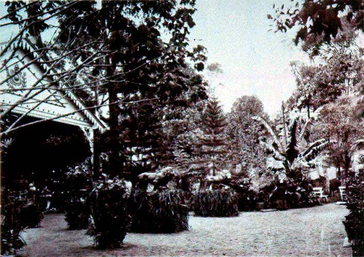

|
|  |
|
Revert Henrique Klumb, Saída da Exposição de Floricultura, Petrópolis 1875
|
Parks and botanical gardens, then, provided a way of modernising earlier romantic or picturesque iconographies of nature and of associating it with scientifico-political discourses of urban reform in the late nineteenth century, such as hygienism. 'Urban nature' was the trope of an interventionist new politics of the city, which sought to 'vigorise' the opulation by bringing 'light' and 'air' into the gloomy quarters of the 'popular classes', which –as in Rio de Janeiro– were often actively destroyed by turn-of-the-century urban reformers allied with land speculators, leading to the creation of the first 'favelas' on formerly unpopulated hillsides. 'Nature', in other words, was invoked as a way of bypassing social and economic realities. At the imperial family mountain retreat of Petrópolis, meanwhile, the annual horticultural exhibitions held at the miniature Crystal Palace built on the initiative of Princess Isabel´s consort, the Count d'Eu, rehearsed an elegant, leisurely variation on the theme of great exhibitions and fairs, emulating the example of the famous British flower shows, casting the exhuberant tropical nature of Brazil in an image of fashionable grandeur and refinement.
|